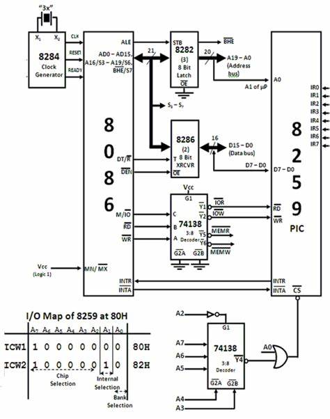

<html>
  <Head>
<meta http-equiv="Content-Type" content="text/html; charset=utf-8">

    
<link rel="stylesheet" href="../static/css/bootstrap.min.css"/>
<link rel="stylesheet" href="../static/css/bootstrap-theme.min.css"/>


    <link rel="stylesheet" href="../static/css/fonts/crmison.css"/>
    <link rel="stylesheet" href="../static/css/fonts/fira_code.css"/>
    <link rel="stylesheet" href="../static/css/fonts/ptsans.css"/>
    <link rel="stylesheet" href="../static/css/katex.min.css"/>
    <link rel="stylesheet" href="../static/css/wiki.css"/>
    <link rel="stylesheet" href="../static/css/codehilite.css"/>

    <script src="../static/js/jquery.min.js"></script>
    <script src="../static/js/bootstrap.bundle.min.js"></script>
    <script src="../static/js/katex.min.js"></script>
    
    

    <title>I/O 设备与驱动</title>
  </Head>
  <body>
   
   
<nav class="navbar fixed-top navbar-expand-lg navbar-dark bg-dark">
  <a class="navbar-barnd" href="index.html">Yanyan's Wiki</a>
  <div class="collapse navbar-collapse">
    <div class="navbar-nav">
      <a class="nav-item nav-link active" href="OS2020.html">
        
        操作系统 (2020)</a>
      <a class="nav-item nav-link active" href="SysLab2020.html">
        计算机系统综合实验 (2020)</a>
      <a class="nav-item nav-link active" href="ICS_NJU.html"> 加入我们</a>
    </div>
    <form class="form-inline" autocomplete="off">
      <input id="token-input" type="text" oninput="login();" maxlength="16"
        data-toggle="tooltip" data-placement="bottom"
        title="用于确定身份的作业提交 SHA-1 hash digest。更改后回车或刷新网页生效"></input>
    </form>
  </div>
</nav>

<center>
  <div class="article-container">
    <div class="article">
      <h1 id="io">I/O 设备与驱动</h1>
<div markdown="1"><div class="fenced fenced-blue"><div>
<h4 id="_1">本讲阅读材料</h4>
<p><a href="http://pages.cs.wisc.edu/~remzi/OSTEP/">教科书 (Operating Systems: Three Easy Pieces, OSTEP)</a> 第 36 章。</p>
</div></div></div>

<h2 id="io_1">I/O 设备</h2>
<p>我们每个人使用计算机，使用的都是它的 I/O 设备，因此对 “计算机” 的第一印象其实都来自这些设备——我们可以通过按键、移动鼠标来改变屏幕上的内容。这一切都是用<strong>计算</strong>实现的——处理器读取二进制的数据、进行计算，再以二进制的形式输出。</p>
<p>I/O 设备是计算机中的一个 “对象” (废话)，它以导线的形式连接到计算机上。大家常见的设备和连接方式有：</p>
<ul>
<li>老式键盘和鼠标 (PS/2 接口，不熟悉的同学可以 Google 之)</li>
<li>显示控制器 (PCIe 接口)，再通过 HDMI/DP 连接显示器</li>
<li>优盘 (USB Type-A/Type-C 接口)</li>
</ul>
<p>这些设备看起来五花八门、很不一样。但为了我们的软件/硬件系统能更好地管理它们，它们势必要遵循一定的规范。从概念上说，设备暴露给计算机系统的接口无非就是一组寄存器，能够从中读取设备的状态、控制设备的行为、读/写状态的数据，这就有了以下的设备模型：</p>
<p></img></p>
<p>无论设备的物理实现多么复杂，最终一定以电路的形式抽象成若干个 “寄存器”，然后遵循一定的访问协议。我们不妨就把 I/O 设备可以看做是若干可以读写的 “寄存器”，可以和处理器交换数据，并根据设备规约的行为和物理世界交互。</p>
<h3 id="1">例子 (1): 键盘控制器</h3>
<p>键盘控制器内部有一个缓冲区，在按键之后会将键盘的扫描码保存到缓冲区内——这就是为什么老式的计算机如果没能进入操作系统，反复按键会导致报警——缓冲区满后，键盘的按键将丢失，键盘用报警的方式提醒用户。CPU 可以通过 I/O 指令 (根据系统实现，端口 I/O 或内存映射 I/O) 读取键盘控制的信息：</p>
<div class="codehilite"><pre><span></span><span class="kt">int</span> <span class="n">status</span> <span class="o">=</span> <span class="n">inb</span><span class="p">(</span><span class="mh">0x64</span><span class="p">);</span>
<span class="k">if</span> <span class="p">((</span><span class="n">status</span> <span class="o">&</span> <span class="mh">0x1</span><span class="p">)</span> <span class="o">==</span> <span class="mi">0</span><span class="p">)</span> <span class="p">{</span>
  <span class="c1">// no input</span>
<span class="p">}</span> <span class="k">else</span> <span class="p">{</span>
  <span class="k">if</span> <span class="p">(</span><span class="n">status</span> <span class="o">&</span> <span class="mh">0x20</span><span class="p">)</span> <span class="p">{</span> <span class="c1">// mouse</span>
  <span class="p">}</span> <span class="k">else</span> <span class="p">{</span>
    <span class="kt">int</span> <span class="n">code</span> <span class="o">=</span> <span class="n">inb</span><span class="p">(</span><span class="mh">0x60</span><span class="p">)</span> <span class="o">&</span> <span class="mh">0xff</span><span class="p">;</span>
    <span class="c1">// 按键的“扫描码”</span>
  <span class="p">}</span>
<span class="p">}</span>
</pre></div>


<p>鼠标和键盘是非常类似的，鼠标向控制器发送的是按键的信息，以及鼠标距离上一个时刻发生的位移 <math>(x, y)</math> 坐标。</p>
<h3 id="2">例子 (2): 磁盘控制器</h3>
<p>磁盘控制器与键盘控制器相似，通过状态、控制、数据访问。因为磁盘相对于 CPU 是很慢的设备 (磁盘中有机械装置，通常需要 ms 级别的时间才能完成操作)，因此让 CPU 不断轮询 status 寄存器会浪费相当多的 CPU 资源 (即下面的 <code>waitdisk</code>)。因此，磁盘驱动器可以配置成中断模式，在磁盘准备完毕后发送中断。</p>
<div class="codehilite"><pre><span></span><span class="kt">void</span> <span class="nf">waitdisk</span><span class="p">(</span><span class="kt">void</span><span class="p">)</span> <span class="p">{</span>
  <span class="k">while</span> <span class="p">(</span>
    <span class="p">(</span><span class="n">in_byte</span><span class="p">(</span><span class="mh">0x1f7</span><span class="p">)</span> <span class="o">&</span> <span class="mh">0xc0</span><span class="p">)</span> <span class="c1">// status (read)</span>
      <span class="o">!=</span> <span class="mh">0x40</span><span class="p">)</span> <span class="p">;</span> <span class="c1">// RDY (ready)</span>
<span class="p">}</span>
<span class="kt">void</span> <span class="nf">readsect</span><span class="p">(</span><span class="kt">void</span> <span class="o">*</span><span class="n">dst</span><span class="p">,</span> <span class="kt">int</span> <span class="n">sect</span><span class="p">)</span> <span class="p">{</span>
  <span class="n">waitdisk</span><span class="p">();</span>
  <span class="n">out_byte</span><span class="p">(</span><span class="mh">0x1f2</span><span class="p">,</span> <span class="mi">1</span><span class="p">);</span>          <span class="c1">// sector count (1)</span>
  <span class="n">out_byte</span><span class="p">(</span><span class="mh">0x1f3</span><span class="p">,</span> <span class="n">sect</span><span class="p">);</span>       <span class="c1">// sector</span>
  <span class="n">out_byte</span><span class="p">(</span><span class="mh">0x1f4</span><span class="p">,</span> <span class="n">sect</span> <span class="o">&gt;&gt;</span> <span class="mi">8</span><span class="p">);</span>  <span class="c1">// cylinder (low)</span>
  <span class="n">out_byte</span><span class="p">(</span><span class="mh">0x1f5</span><span class="p">,</span> <span class="n">sect</span> <span class="o">&gt;&gt;</span> <span class="mi">16</span><span class="p">);</span> <span class="c1">// cylinder (high)</span>
  <span class="n">out_byte</span><span class="p">(</span><span class="mh">0x1f6</span><span class="p">,</span> <span class="p">(</span><span class="n">sect</span> <span class="o">&gt;&gt;</span> <span class="mi">24</span><span class="p">)</span> <span class="o">|</span> <span class="mh">0xe0</span><span class="p">);</span> <span class="c1">// drive</span>
  <span class="n">out_byte</span><span class="p">(</span><span class="mh">0x1f7</span><span class="p">,</span> <span class="mh">0x20</span><span class="p">);</span>       <span class="c1">// command (write)</span>

  <span class="n">waitdisk</span><span class="p">();</span>
  <span class="k">for</span> <span class="p">(</span><span class="kt">int</span> <span class="n">i</span> <span class="o">=</span> <span class="mi">0</span><span class="p">;</span> <span class="n">i</span> <span class="o">&lt;</span> <span class="n">SECTSIZE</span> <span class="o">/</span> <span class="mi">4</span><span class="p">;</span> <span class="n">i</span> <span class="o">++</span><span class="p">)</span>
    <span class="p">((</span><span class="kt">uint32_t</span> <span class="o">*</span><span class="p">)</span><span class="n">dst</span><span class="p">)[</span><span class="n">i</span><span class="p">]</span> <span class="o">=</span> <span class="n">in_long</span><span class="p">(</span><span class="mh">0x1f0</span><span class="p">);</span> <span class="c1">// data</span>
<span class="p">}</span>
</pre></div>


<h3 id="3">例子 (3): 中断控制器</h3>
<p>我们的处理器通常有一根中断线 (INTR)。那它是如何接收来自不同设备的中断呢？答案是系统中可以有一个中断控制器。在早期的系统 (例如 IBM PC) 中，中断控制器 (8259) 就是一个普通的 I/O 设备，它 “收集” 系统中其他设备的中断，并且可以将中断信号传送给 CPU。</p>
<p></img></p>
<p>8259 PIC 是可编程的中断控制器 (Programmable Interrupt Controller), 支持诸如中断屏蔽、中断触发等设定。在这个意义上，中断控制器看来就是一个 I/O 设备。现在这些功能被处理器内置的 APIC (Advanced PIC) 取代。有兴趣的同学可以阅读 xv6 中相关部分的代码。</p>
<h3 id="4">例子 (4): 总线</h3>
<p>我们已经知道，处理器的指令能够访问 I/O 设备，主要是通过两种方式实现的：</p>
<ul>
<li>端口 I/O (Port IO, PIO)，相当于是为 I/O 设备提供了一个单独的地址空间，通过读/写端口的方式实现设备控制。通常，一个 I/O 设备的寄存器分为三类：状态寄存器、控制寄存器、数据寄存器。顾名思义，我们可以通过控制寄存器实现设备控制 (例如设置设备的模式等)，从数据寄存器读写数据，并且读取状态寄存器来查看设备执行命令的状态。</li>
<li>内存映射 I/O (Memory-Mapped I/O, MMIO)。给特定的内存地址赋予特殊的含义，从而读/写内存地址就能实现设备的访问。在计算机系统基础的 PA 中，显存就是通过这种方式实现的。一方面，内存映射 I/O 完全可以用来实现状态/控制/数据寄存器，另一方面，在设备从外部看来是一段连续数据时(例如显存)，MMIO 能减少 I/O 指令的数量。</li>
</ul>
<p>不过你们有想过，CPU 是如何把这些指令发送给对应的设备的？如果我们考虑一个年代久远一些的 CPU，例如 6502 (NES) 或 8086 (IBM PC)，它们的 CPU 只有 40 个引脚。想要访问数量众多的 I/O 设备似乎是很不足够的——那我们在系统里添加一个 I/O 设备，专门用于把 CPU 的地址/数据转发给设备 (甚至是内存)，是不是就可以了？</p>
<p>在此意义上，总线也可以看成是一个 I/O 设备。它把输入的地址/数据 “转发” 给连接到总线上的其他设备。你也可以理解为，CPU 连接到总线后，总线这个设备会帮助 CPU 打通一个 CPU 和设备之间的数据通路，从而帮助 CPU 和设备之间的数据传输。在 Linux 系统中，我们可以使用 lspci 和 lsusb 命令查看总线上连接的设备，大家不妨在自己的电脑上试一试。</p>
<h3 id="5-dma">例子 (5): DMA</h3>
<p>有一类设备十分特殊：它并不负责与计算机系统外的 I/O，它的出现主要是为了解决设备访问速度慢的一个缺点：试想我们希望从磁盘中读出海量的数据。在磁盘准备好后，我们就可以使用一个循环进行读取：</p>
<div class="codehilite"><pre><span></span><span class="k">for</span> <span class="p">(</span><span class="kt">int</span> <span class="n">i</span> <span class="o">=</span> <span class="mi">0</span><span class="p">;</span> <span class="n">i</span> <span class="o">&lt;</span> <span class="n">nbytes</span> <span class="o">/</span> <span class="k">sizeof</span><span class="p">(</span><span class="kt">uint32_t</span><span class="p">);</span> <span class="n">i</span><span class="o">++</span><span class="p">)</span> <span class="p">{</span>
  <span class="n">data</span><span class="p">[</span><span class="n">i</span><span class="p">]</span> <span class="o">=</span> <span class="n">inl</span><span class="p">(</span><span class="n">DISK_PORT</span><span class="p">);</span> <span class="c1">// or</span>
  <span class="n">data</span><span class="p">[</span><span class="n">i</span><span class="p">]</span> <span class="o">=</span> <span class="n">mmio_readl</span><span class="p">(</span><span class="n">DISK_MMIO_ADDR</span><span class="p">);</span>
<span class="p">}</span>
</pre></div>


<p>当然了，因为每从总线上读取一个字符，都要去 I/O 设备的寄存器上 “兜一圈”，如果读/写的数据量巨大，CPU 的负担一定不小。那么，我们有没有可能在系统里增加一个处理器，帮助我们处理这些 I/O 密集的负载呢？这就是 DMA (Direct Memory Access)。这甚至是一种变相的 Big.LITTLE 架构！负责通用计算的 “大核心” 和负责 I/O 设备处理的 “小核心”。</p>
<p>DMA设备可以看成是一个只能执行 memcpy 操作的处理器：</p>
<div class="codehilite"><pre><span></span><span class="k">enum</span> <span class="n">dma_mtype</span> <span class="p">{</span> <span class="n">DMA_MEMORY</span><span class="p">,</span> <span class="n">DMA_MMIO</span><span class="p">,</span> <span class="n">DMA_PIO</span><span class="p">,</span> <span class="n">DMA_PCIE</span> <span class="p">};</span>
<span class="k">struct</span> <span class="n">dma_rq</span> <span class="p">{</span>
  <span class="k">enum</span> <span class="n">dma_mtype</span> <span class="n">src_type</span><span class="p">,</span> <span class="n">dst_type</span><span class="p">;</span>
  <span class="kt">uintptr_t</span> <span class="n">size</span><span class="p">,</span> <span class="n">src</span><span class="p">,</span> <span class="n">dst</span><span class="p">,</span> <span class="n">chunk_size</span><span class="p">;</span>
  <span class="kt">uint8_t</span>   <span class="n">trunk</span><span class="p">[</span><span class="n">TRUNK_SIZE</span><span class="p">];</span>
<span class="p">}</span> <span class="o">*</span><span class="n">rq</span><span class="p">;</span>

<span class="kt">void</span> <span class="nf">dma_processor</span><span class="p">()</span> <span class="p">{</span>
  <span class="k">while</span> <span class="p">(</span><span class="mi">1</span><span class="p">)</span> <span class="p">{</span>
    <span class="n">wait_for_rq</span><span class="p">();</span>
    <span class="k">for</span> <span class="p">(</span><span class="kt">uintptr_t</span> <span class="n">i</span> <span class="o">=</span> <span class="mi">0</span><span class="p">;</span> <span class="n">i</span> <span class="o">&lt;</span> <span class="n">rq</span><span class="o">-&gt;</span><span class="n">size</span><span class="p">;</span> <span class="n">i</span> <span class="o">+=</span> <span class="n">rq</span><span class="o">-&gt;</span><span class="n">chunk_size</span><span class="p">)</span> <span class="p">{</span>
      <span class="n">dma_load</span> <span class="p">(</span><span class="o">&</span><span class="n">rq</span><span class="o">-&gt;</span><span class="n">trunk</span><span class="p">,</span> <span class="n">rq</span><span class="o">-&gt;</span><span class="n">src</span><span class="p">,</span> <span class="n">i</span><span class="p">);</span>
      <span class="n">dma_store</span><span class="p">(</span><span class="o">&</span><span class="n">rq</span><span class="o">-&gt;</span><span class="n">trunk</span><span class="p">,</span> <span class="n">rq</span><span class="o">-&gt;</span><span class="n">dst</span><span class="p">,</span> <span class="n">i</span><span class="p">);</span>
    <span class="p">}</span>
    <span class="n">raise_interrupt</span><span class="p">(</span><span class="n">IRQ_DMA</span><span class="p">);</span> <span class="c1">// inter-processor interrupt</span>
  <span class="p">}</span>
<span class="p">}</span>
</pre></div>


<p>有了这样的一个特殊的设备，CPU 就不再需要花费时间在传送大量 I/O 设备数据上，而是只需要把少量控制信息 (例如 memcpy 的源、目标等) 发送给 DMA，DMA 完成传输后会以中断的形式通知处理器。实际上，DMA 是现代计算机系统中高速设备的标准访问方式，PCI 总线自带 DMA 控制器完成内存与设备之间的数据传送。</p>
<h3 id="6">例子 (6): 显示控制器</h3>
<p>显卡是大家最感兴趣的设备——没有它，就没有那么多好玩的游戏了。不过当我们介绍显卡 (GPU) 的时候，并不通过 “图形显示” 这个功能来介绍它，而是写一段在显卡上运行的程序，来解释显卡的工作原理。以下是一段为 GPU 编写的程序：</p>
<div class="codehilite"><pre><span></span><span class="n">__global__</span> <span class="kt">void</span> <span class="nf">add</span><span class="p">(</span><span class="kt">int</span> <span class="o">*</span><span class="n">a</span><span class="p">,</span> <span class="kt">int</span> <span class="o">*</span><span class="n">b</span><span class="p">,</span> <span class="kt">int</span> <span class="o">*</span><span class="n">c</span><span class="p">)</span> <span class="p">{</span>
  <span class="kt">int</span> <span class="n">tid</span> <span class="o">=</span> <span class="n">blockIdx</span><span class="p">.</span><span class="n">x</span><span class="p">;</span> <span class="c1">// handle the data at this index if (tid &lt; N)</span>
  <span class="k">if</span> <span class="p">(</span><span class="n">tid</span> <span class="o">&lt;</span> <span class="n">N</span><span class="p">)</span> <span class="p">{</span>
    <span class="n">c</span><span class="p">[</span><span class="n">tid</span><span class="p">]</span> <span class="o">=</span> <span class="n">a</span><span class="p">[</span><span class="n">tid</span><span class="p">]</span> <span class="o">+</span> <span class="n">b</span><span class="p">[</span><span class="n">tid</span><span class="p">];</span>
  <span class="p">}</span>
<span class="p">}</span>
</pre></div>


<p>可以看到，GPU 上程序最重要的特性就是<strong>并行</strong>。一个 GPU 上有数以千计的核心，并且可以被配置成三维 “立方体” 的形态，编写一份程序可以在立方体的节点上同时运行 (这个例子只用到了一个维度)——虽然每个 CUDA 核心执行顺序指令的速度并不如 CPU (大量的乱序执行、投机执行等部件用于优化单线程程序执行的速度)，但在运算量极大的场景上，多核心的优势就体现出来了。</p>
<p>CPU 与 GPU 协作工作的模式大致如下：</p>
<ul>
<li>把需要的数据和用于计算的代码传送给 GPU。对于上一个例子，GPU 需要的数据是两个数组；对于游戏或图形显示的例子，GPU 需要顶点信息、材质、贴图、映射等信息。这部分数据传送通常是通过 DMA 完成的。以及，一些常用的数据 (例如游戏场景的模型、贴图等) 可以常驻显存；</li>
<li>通知 GPU 开始运算并等待运算结束；</li>
<li>从 GPU 处取回运算结果。如果运算的结果最终的目的是显示在屏幕上 (例如算出 1920x1080 个像素点的颜色)，GPU 可以帮助我们把这个信号发送到显示接口 (例如 HDMI)上，此时 CPU 就完全不必过问图形的显示了——它只需要告诉 GPU “算什么”，剩下的事情 GPU 都会帮忙搞定。</li>
</ul>
<p>同样的流程也适用于当下最热门的神经网络的训练——例如 Tensor Core 能够大规模并行地执行 <math class="inline-math">4 \times 4</math> 的矩阵运算：</p>
<p><math class="block-math">D(\textrm{FP}_{32}) = A(\textrm{FP}_{16}) \cdot B(\textrm{FP}_{16}) + C(\textrm{FP}_{32})</math></p>
<p>为了在实际的 GPU 上运行刚才的 <code>add</code>，我们还需要编写 CPU 部分的代码：</p>
<div class="codehilite"><pre><span></span><span class="kt">int</span> <span class="nf">main</span><span class="p">(</span> <span class="kt">void</span> <span class="p">)</span> <span class="p">{</span>
  <span class="kt">int</span> <span class="n">a</span><span class="p">[</span><span class="n">N</span><span class="p">],</span> <span class="n">b</span><span class="p">[</span><span class="n">N</span><span class="p">],</span> <span class="n">c</span><span class="p">[</span><span class="n">N</span><span class="p">];</span>
  <span class="kt">int</span> <span class="o">*</span><span class="n">dev_a</span><span class="p">,</span> <span class="o">*</span><span class="n">dev_b</span><span class="p">,</span> <span class="o">*</span><span class="n">dev_c</span><span class="p">;</span>

  <span class="c1">// allocate the memory on the GPU</span>
  <span class="n">HANDLE_ERROR</span><span class="p">(</span><span class="n">cudaMalloc</span><span class="p">((</span><span class="kt">void</span><span class="o">**</span><span class="p">)</span><span class="o">&</span><span class="n">dev_a</span><span class="p">,</span> <span class="n">N</span> <span class="o">*</span> <span class="k">sizeof</span><span class="p">(</span><span class="kt">int</span><span class="p">)));</span>
  <span class="n">HANDLE_ERROR</span><span class="p">(</span><span class="n">cudaMalloc</span><span class="p">((</span><span class="kt">void</span><span class="o">**</span><span class="p">)</span><span class="o">&</span><span class="n">dev_b</span><span class="p">,</span> <span class="n">N</span> <span class="o">*</span> <span class="k">sizeof</span><span class="p">(</span><span class="kt">int</span><span class="p">)));</span>
  <span class="n">HANDLE_ERROR</span><span class="p">(</span><span class="n">cudaMalloc</span><span class="p">((</span><span class="kt">void</span><span class="o">**</span><span class="p">)</span><span class="o">&</span><span class="n">dev_c</span><span class="p">,</span> <span class="n">N</span> <span class="o">*</span> <span class="k">sizeof</span><span class="p">(</span><span class="kt">int</span><span class="p">)));</span>

  <span class="c1">// fill the arrays 'a' and 'b' on the CPU</span>
  <span class="k">for</span> <span class="p">(</span><span class="kt">int</span> <span class="n">i</span><span class="o">=</span><span class="mi">0</span><span class="p">;</span> <span class="n">i</span><span class="o">&lt;</span><span class="n">N</span><span class="p">;</span> <span class="n">i</span><span class="o">++</span><span class="p">)</span> <span class="p">{</span>
    <span class="n">a</span><span class="p">[</span><span class="n">i</span><span class="p">]</span> <span class="o">=</span> <span class="o">-</span><span class="n">i</span><span class="p">;</span>
    <span class="n">b</span><span class="p">[</span><span class="n">i</span><span class="p">]</span> <span class="o">=</span> <span class="n">i</span> <span class="o">*</span> <span class="n">i</span><span class="p">;</span>
  <span class="p">}</span>

  <span class="c1">// copy the arrays 'a' and 'b' to the GPU</span>
  <span class="n">HANDLE_ERROR</span><span class="p">(</span><span class="n">cudaMemcpy</span><span class="p">(</span><span class="n">dev_a</span><span class="p">,</span> <span class="n">a</span><span class="p">,</span> <span class="n">N</span> <span class="o">*</span> <span class="k">sizeof</span><span class="p">(</span><span class="kt">int</span><span class="p">),</span> <span class="n">cudaMemcpyHostToDevice</span><span class="p">));</span>
  <span class="n">HANDLE_ERROR</span><span class="p">(</span><span class="n">cudaMemcpy</span><span class="p">(</span><span class="n">dev_b</span><span class="p">,</span> <span class="n">b</span><span class="p">,</span> <span class="n">N</span> <span class="o">*</span> <span class="k">sizeof</span><span class="p">(</span><span class="kt">int</span><span class="p">),</span> <span class="n">cudaMemcpyHostToDevice</span><span class="p">));</span>

  <span class="n">add</span><span class="o">&lt;&lt;&lt;</span><span class="n">N</span><span class="p">,</span><span class="mi">1</span><span class="o">&gt;&gt;&gt;</span><span class="p">(</span> <span class="n">dev_a</span><span class="p">,</span> <span class="n">dev_b</span><span class="p">,</span> <span class="n">dev_c</span> <span class="p">);</span>

  <span class="c1">// copy the array 'c' back from the GPU to the CPU</span>
  <span class="n">HANDLE_ERROR</span><span class="p">(</span><span class="n">cudaMemcpy</span><span class="p">(</span><span class="n">c</span><span class="p">,</span> <span class="n">dev_c</span><span class="p">,</span> <span class="n">N</span> <span class="o">*</span> <span class="k">sizeof</span><span class="p">(</span><span class="kt">int</span><span class="p">),</span> <span class="n">cudaMemcpyDeviceToHost</span><span class="p">));</span>

  <span class="c1">// display the results</span>
  <span class="k">for</span> <span class="p">(</span><span class="kt">int</span> <span class="n">i</span><span class="o">=</span><span class="mi">0</span><span class="p">;</span> <span class="n">i</span><span class="o">&lt;</span><span class="n">N</span><span class="p">;</span> <span class="n">i</span><span class="o">++</span><span class="p">)</span> <span class="p">{</span>
    <span class="n">printf</span><span class="p">(</span> <span class="s">"%d + %d = %d</span><span class="se">\n</span><span class="s">"</span><span class="p">,</span> <span class="n">a</span><span class="p">[</span><span class="n">i</span><span class="p">],</span> <span class="n">b</span><span class="p">[</span><span class="n">i</span><span class="p">],</span> <span class="n">c</span><span class="p">[</span><span class="n">i</span><span class="p">]</span> <span class="p">);</span>
  <span class="p">}</span>

  <span class="c1">// free the memory allocated on the GPU</span>
  <span class="n">cudaFree</span><span class="p">(</span><span class="n">dev_a</span><span class="p">);</span>
  <span class="n">cudaFree</span><span class="p">(</span><span class="n">dev_b</span><span class="p">);</span>
  <span class="n">cudaFree</span><span class="p">(</span><span class="n">dev_c</span><span class="p">);</span>
  <span class="k">return</span> <span class="mi">0</span><span class="p">;</span>
<span class="p">}</span>
</pre></div>


<p>它会编译成 Linux 本地的 ELF 文件，加载我们编译到 GPU 的 <code>add</code> 执行。</p>
<div markdown="1"><div class="fenced fenced-green"><div>
<h4 id="gpu">编译到 GPU: 发生了什么？</h4>
<p>使用 nvcc 编译器可以将上述程序编译成 GPU。你没有猜错——CPU 部分的代码和 GPU 部分的代码 (由<code>__global__</code>标记) 是分开编译的。在 GPU 上运行的程序有两种模式：</p>
<ul>
<li>直接生成 GPU 指令 .cubin 文件</li>
<li>生成中间代码 .ptx 文件(可以想象成是 NEMU 中的 RTL)，然后再由显卡驱动进行 just-in-time 编译，最终到 GPU 上运行</li>
</ul>
<p>编译到本地的二进制文件会负责与驱动程序通信，给 GPU 发送正确的指令，执行程序并等待执行完成。</p>
</div></div></div>

<p>为了显示图形，流程和上述代码是十分类似的，但 GPU 毕竟从它诞生的那一刻起的根本使命就是显示图像，因此有专门的核心、指令等用于<a href="https://en.wikipedia.org/wiki/Rendering_pipeline">图像显示</a>，刚才用于通用计算的程序就是脱胎于其中的 “着色器” (shader)，而我们的渲染管线就是将 3D 图片在二维图像意义上进行 “层层 PS” (有些层次，例如 ray tracing 需要 3D 的模型信息)。这些知识已经超过操作系统课程的范畴——操作系统把 GPU 看成是总线上的一个设备，剩下的工作就都交给设备驱动程序了。</p>
<p><center></img></center></p>
<h2 id="_1">设备驱动程序</h2>
<p>I/ O设备五花八门。因此操作系统需要对设备进行额外的抽象，使得更上层的部分 (通常是文件系统，大家之前已经看到 “everything is a file”，每个设备在文件系统中都有一个与之对应的文件，并且可以执行文件操作) 能够以统一的接口访问这些设备。</p>
<p>I/O设备的几种常见类型：</p>
<ul>
<li>按照字节流访问的设备。键盘、鼠标、终端、显卡等都是此类设备。</li>
<li>按照 “数据块” 为单位访问的设备。存储设备 (磁盘、SSD) 是典型的块设备。</li>
<li>发送网络报文的设备。</li>
</ul>
<p>根据设备类型不同，我们给每一类设备以统一的接口访问，实现这些接口的就是设备驱动程序。例如在 Lab2 中，我们有非常简易的设备驱动层，每个设备都有 read, write 两种操作 (假设设备在计算机启动的整个过程中均可用，忽略 init)：</p>
<div class="codehilite"><pre><span></span><span class="k">typedef</span> <span class="k">struct</span> <span class="n">devops</span> <span class="p">{</span>
  <span class="kt">int</span> <span class="p">(</span><span class="o">*</span><span class="n">init</span><span class="p">)(</span><span class="n">device_t</span> <span class="o">*</span><span class="n">dev</span><span class="p">);</span>
  <span class="kt">ssize_t</span> <span class="p">(</span><span class="o">*</span><span class="n">read</span><span class="p">)(</span><span class="n">device_t</span> <span class="o">*</span><span class="n">dev</span><span class="p">,</span> <span class="kt">off_t</span> <span class="n">offset</span><span class="p">,</span> <span class="kt">void</span> <span class="o">*</span><span class="n">buf</span><span class="p">,</span> <span class="kt">size_t</span> <span class="n">count</span><span class="p">);</span>
  <span class="kt">ssize_t</span> <span class="p">(</span><span class="o">*</span><span class="n">write</span><span class="p">)(</span><span class="n">device_t</span> <span class="o">*</span><span class="n">dev</span><span class="p">,</span> <span class="kt">off_t</span> <span class="n">offset</span><span class="p">,</span> <span class="k">const</span> <span class="kt">void</span> <span class="o">*</span><span class="n">buf</span><span class="p">,</span> <span class="kt">size_t</span> <span class="n">count</span><span class="p">);</span>
<span class="p">}</span> <span class="n">devops_t</span><span class="p">;</span>
</pre></div>


<p>在实际的系统中，设备实现的操作要更多一些 (例如 Linux 系统设备实现完整的 <code>struct file_operations</code>)，这样上层的应用就可以用统一的接口来访问设备了——没错！你没看错！设备实现的是 “文件” 的接口！设备驱动程序会将对这些接口的调用翻译成设备的指令发送给设备，并等设备完成 (例如在中断时返回数据)，因此，磁盘的 read 操作可能是这样实现的：</p>
<div class="codehilite"><pre><span></span><span class="kt">ssize_t</span> <span class="nf">disk_read</span><span class="p">(</span><span class="n">deivce_t</span> <span class="o">*</span><span class="n">dev</span><span class="p">,</span> <span class="kt">off_t</span> <span class="n">offset</span><span class="p">,</span> <span class="kt">void</span> <span class="o">*</span><span class="n">buf</span><span class="p">,</span> <span class="kt">size_t</span> <span class="n">count</span><span class="p">)</span> <span class="p">{</span>
  <span class="c1">// assume everything is valid</span>
  <span class="n">P</span><span class="p">(</span><span class="n">disk_ready</span><span class="p">);</span>
  <span class="n">set_disk_read</span><span class="p">(</span><span class="n">buf</span><span class="p">,</span> <span class="n">offset</span><span class="p">,</span> <span class="n">count</span><span class="p">);</span>
  <span class="n">P</span><span class="p">(</span><span class="n">disk_ready</span><span class="p">);</span>
  <span class="k">return</span> <span class="n">count</span><span class="p">;</span>
<span class="p">}</span>

<span class="kt">void</span> <span class="nf">on_disk_irq</span><span class="p">()</span> <span class="p">{</span> <span class="c1">// 中断时调用</span>
  <span class="k">if</span> <span class="p">(</span><span class="n">did_becomes_ready</span><span class="p">())</span> <span class="p">{</span>
    <span class="n">V</span><span class="p">(</span><span class="n">disk_ready</span><span class="p">);</span>
  <span class="p">}</span>
<span class="p">}</span>
</pre></div>


<p>设备驱动层帮助我们屏蔽了底层设备的具体实现细节 (例如寄存器的含义)。同理，如果我们想创建 “虚拟” 设备，也是非常容易的，只需要为它编写一个驱动程序即可。例如我们希望实现随机数生成器设备，就只需要实现设备的读接口，不需要有实际的设备：</p>
<div class="codehilite"><pre><span></span><span class="kt">ssize_t</span> <span class="nf">random_read</span><span class="p">(</span><span class="n">deivce_t</span> <span class="o">*</span><span class="n">dev</span><span class="p">,</span> <span class="kt">off_t</span> <span class="n">offset</span><span class="p">,</span> <span class="kt">void</span> <span class="o">*</span><span class="n">buf</span><span class="p">,</span> <span class="kt">size_t</span> <span class="n">count</span><span class="p">)</span> <span class="p">{</span>
  <span class="k">for</span> <span class="p">(</span><span class="kt">int</span> <span class="n">i</span> <span class="o">=</span> <span class="mi">0</span><span class="p">;</span> <span class="n">i</span> <span class="o">&lt;</span> <span class="n">count</span><span class="p">;</span> <span class="n">i</span><span class="o">++</span><span class="p">)</span> <span class="p">{</span>
    <span class="p">((</span><span class="kt">uint8_t</span> <span class="o">*</span><span class="p">)</span><span class="n">buf</span><span class="p">)[</span><span class="n">i</span><span class="p">]</span> <span class="o">=</span> <span class="n">random_byte</span><span class="p">();</span>
  <span class="p">}</span>
  <span class="k">return</span> <span class="n">count</span><span class="p">;</span>
<span class="p">}</span>
</pre></div>


<p>Linux 系统中就有一些虚拟的设备: <code>/dev/random</code>, <code>/dev/null</code> 是大家熟知且经常使用的，它们被实现为了 “字符设备”。</p>
    </div>
  </div>
</center>

<div class="footer-bottom">
  <center>
    <div class="copyright"> © 2020 Yanyan Jiang, All rights reserved </div>
  </center>
</div>


    <script>
      $(function () {
        $('[data-toggle="tooltip"]').tooltip()
      })

      $("math").each(function() {
        var tex = $(this).text();
        var html = katex.renderToString(tex, {
          displayMode: $(this).attr('class') == 'block-math',
          throwOnError: false
        });
        $(this).replaceWith(html);
      });

      function get_token() {
        var match = document.cookie.match(new RegExp('(^| )token=([^;]+)'));
        if (match) return match[2];
        else return "";
      }

      var token = get_token();
      var hint = "token", box = $("#token-input");

      if (token == "") { box.val(hint); }
      else { box.val(token); }

      function login() {
        var token = box.val()
        document.cookie = 'token=' + token + '; expires=Fri, 31 Dec 9999 23:59:59 GMT;';
        if (token == '') {
          box.val(hint);
        }
      }
    </script>
  </body>
</html>